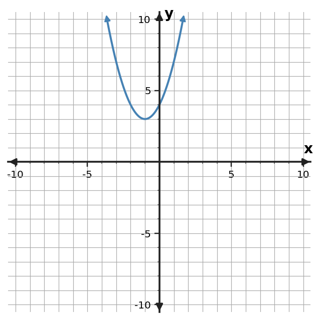

Learning Target
Students will solve quadratic equations using the quadratic formula and interpret solutions.
- I can design a coefficient map that organizes $a$, $b$, and $c$ before using the quadratic formula.
- I can apply the quadratic formula to solve equations with rational, irrational, or no real solutions.
- I can assess how the discriminant predicts the number and type of real solutions.
Vocabulary / Key Notation Preview
quadratic formula · discriminant · $a$ · $b$ · $c$
Sort the vocabulary. Put each term where it belongs based on what you know before reading.
| Know for sure | Recognize | Don't know yet |
|---|---|---|
What's to Come
DO NOT SOLVE IT YET.
Circle anything familiar, underline symbols, labels, conditions, data, or features that seem important, and write short notes about what you think may matter later.
Three quadratic graphs, labeled $f$, $g$, and $h$, are shown on the same axes.

- How many real solutions would $f(x)=0$, $g(x)=0$, and $h(x)=0$ have?
- What graph feature tells you the number of real solutions?
- Predict what information in an equation might help determine this without graphing.
Teaching note: Listen for students distinguishing two, one, and zero x-intercepts and wondering what equation feature could predict that count without graphing.
Let's Get Started
Skim the section. Record what catches your attention before you read closely.
| What I noticed | |
|---|---|
| What I predict | |
| What I wonder |
CLOSE-READ AND ANNOTATE
Read in short chunks. Mark the first-use vocabulary, connect sentences to equations/tables/graphs, label important features, and jot a question or connection when something changes your thinking.
I Can 1: I can design a coefficient map that organizes $a$, $b$, and $c$ before using the quadratic formula.
The quadratic formula is built for equations written in standard form $ax^2+bx+c=0$, where $a$ is not zero. Before substituting, organize the coefficients carefully. A coefficient map records the signed values of $a$, $b$, and $c$ exactly as they appear.
Signs are part of the coefficients. In $-3x^2+5x+2=0$, the value of $a$ is $-3$, not $3$. If a term is missing, its coefficient is zero. Writing the map first reduces substitution errors and makes the later arithmetic easier to audit.
The formula $x=(-b\pm\sqrt{b^2-4ac})/(2a)$ uses all three coefficients. Because $b$ appears both outside and inside the square root, a sign mistake can affect several parts of the calculation. Slow, visible substitution is usually faster than repairing a hidden error later.
- In $-3x^2+5x+2=0$, what are $a$, $b$, and $c$?
- Why should signs be copied into a coefficient map instead of added later from memory?
- What coefficient would a missing $x$-term have?
Teacher answer: 1) $a=-3$, $b=5$, $c=2$. 2) Because the sign is part of the coefficient and affects every substitution where that coefficient appears. 3) Zero.
Standard form: $ax^2+bx+c=0$
| Equation | $a$ | $b$ | $c$ |
|---|---|---|---|
| $2x^2-7x-4=0$ | $2$ | $-7$ | $-4$ |
Example 1: Map the coefficients
For $2x^2-7x-4=0$, identify $a$, $b$, and $c$ before using the quadratic formula.
Teacher answer: $a=2,\ b=-7,\ c=-4$.
Discourse Moves
Teacher Moves
- Have students name signed coefficients aloud before substitution.
- Ask what a missing term contributes to the map.
- Probe why sign errors compound in the formula.
Student Moves
- Map $a,b,c$ with signs.
- Represent missing terms with zero coefficients.
- Explain why careful mapping prevents multiple downstream errors.
You Try It 1: Map the coefficients
For $-3x^2+5x+2=0$, identify $a$, $b$, and $c$.
Teacher answer: $a=-3,\ b=5,\ c=2$.
I Can 2: I can apply the quadratic formula to solve equations with rational, irrational, or no real solutions.
The quadratic formula solves any quadratic equation with real-number coefficients once it is written as $ax^2+bx+c=0$. The plus-or-minus symbol creates two branches: one calculation uses addition and the other uses subtraction.
Sometimes the square root simplifies to a whole number, giving rational solutions. Sometimes it contains a non-square positive number, and the exact answer keeps the radical. Exact form preserves full information; a decimal approximation can be added afterward when a context or graph estimate needs it.
If the expression under the square root is negative, there are no real-number solutions. That is not a failure of the formula. It is information about the quadratic: its graph does not meet the $x$-axis in the real coordinate plane.
- What does the plus-or-minus symbol require you to do?
- When should an irrational answer stay in radical form?
- Why does a negative quantity under the square root mean there are no real solutions?
Teacher answer: 1) Evaluate both branches, one with plus and one with minus. 2) Keep exact radical form unless an approximation is specifically useful or requested. 3) Real numbers do not have real square roots of negative values, so no real branch can be produced.
$x=(-b\pm\sqrt{b^2-4ac})/(2a)$
- Write the equation in standard form.
- Map $a$, $b$, and $c$ with signs.
- Substitute visibly.
- Simplify the radical and both branches.
- Approximate only when useful.
Example 2: Use the quadratic formula
Use the quadratic formula to solve $x^2-5x+6=0$.
Teacher answer: $x=\frac{5\pm\sqrt{25-24}}{2}=\frac{5\pm1}{2}$, so $x=2,3$.
Discourse Moves
Teacher Moves
- Ask students to separate the plus and minus branches visibly.
- Press for exact form before decimal form.
- Invite a check using factoring or graphing when available.
Student Moves
- Compute both branches.
- Preserve exact radicals.
- Compare formula roots with another representation.
You Try It 2: Use the quadratic formula
Use the quadratic formula to solve $x^2+x-6=0$.
Teacher answer: $x=\frac{-1\pm5}{2}$, so $x=2,-3$.
Example 3: Keep exact irrational solutions
Use the quadratic formula to solve $x^2-2x-1=0$. Give exact solutions.
Teacher answer: $x=1\pm\sqrt2$.
You Try It 3: Keep exact irrational solutions
Use the quadratic formula to solve $x^2+4x+1=0$. Give exact solutions.
Teacher answer: $x=-2\pm\sqrt3$.
I Can 3: I can assess how the discriminant predicts the number and type of real solutions.
The expression $b^2-4ac$ is called the discriminant. It appears under the square root in the quadratic formula, so its sign predicts what kind of real solution behavior is possible before we finish solving.
If the discriminant is positive, its square root produces two different real branches, so there are two distinct real solutions. If it equals zero, both branches collapse to the same value, giving one repeated real solution. If it is negative, the square root is not real, so there are no real solutions.
The graph tells the same story. Two real solutions correspond to two $x$-intercepts, one repeated real solution corresponds to a parabola touching the axis once, and no real solutions correspond to a parabola that stays entirely above or below the $x$-axis. The discriminant is therefore an algebraic preview of graph behavior.
- What does a positive discriminant tell you?
- What does a zero discriminant look like on the graph?
- How is the discriminant an algebraic way to predict the number of $x$-intercepts?
Teacher answer: 1) Two distinct real solutions. 2) The parabola touches the $x$-axis at one repeated root. 3) Its sign determines whether the square-root term creates two branches, one repeated branch, or no real branch, matching 2/1/0 intercepts.
| $b^2-4ac$ | Real solutions | Graph |
|---|---|---|
| $\gt0$ | 2 distinct | 2 x-intercepts |
| $=0$ | 1 repeated | touches x-axis |
| $\lt0$ | 0 | no x-intercepts |
Example 4: Predict with the discriminant
Without solving completely, use the discriminant to determine the number of real solutions of $3x^2+2x+5=0$.
Teacher answer: $b^2-4ac=4-60=-56\lt0$, so there are no real solutions.
Discourse Moves
Teacher Moves
- Ask for a prediction before any roots are calculated.
- Compare the three discriminant cases to graph intercepts.
- Probe what context can still change after the real-root count is known.
Student Moves
- Classify discriminant sign.
- Connect sign to 2/1/0 intercepts.
- Distinguish algebraic root count from contextual meaning.
You Try It 4: Predict with the discriminant
Use the discriminant to determine the number of real solutions of $2x^2-8x+8=0$.
Teacher answer: $64-64=0$, so there is one repeated real solution.
Example 5: Connect discriminant and graph
Use the graph to predict the number of real solutions, then confirm with the discriminant for $x^2+4x-5=0$.

Teacher answer: The graph has two intercepts. The discriminant is $16+20=36\gt0$, confirming two real solutions.
You Try It 5: Connect discriminant and graph
Use the graph to predict the number of real solutions, then confirm with the discriminant for $x^2+2x+4=0$.

Teacher answer: The graph has no $x$-intercepts. The discriminant is $4-16=-12\lt0$, confirming no real solutions.
Example 6: Interpret discriminant in context
A model for a signal is $s(t)=2t^2-3t+5$. Explain what a negative discriminant for $s(t)=0$ means in context.
Teacher answer: A negative discriminant means the model never reaches 0 for real $t$; the graph has no real time-axis intercepts. Whether that is physically meaningful depends on the modeled domain.
You Try It 6: Interpret discriminant in context
A quadratic height model has discriminant 49 when set equal to zero. What does that tell you before finding the times?
Teacher answer: The discriminant is positive, so there are two distinct real algebraic times; the context still determines which times are meaningful.
Summary
- Map signed values of $a$, $b$, and $c$ before using the quadratic formula.
- The quadratic formula works for any quadratic equation in standard form with $a e0$.
- Keep exact radical answers when possible and approximate only when useful.
- The discriminant predicts two, one, or zero real solutions and matches graph intercept behavior.
Common Mistakes
| Watch for | Better check |
|---|---|
| Dropping a negative sign when identifying $a$, $b$, or $c$. | What should I check instead? |
| Forgetting that plus-or-minus requires two branches. | What should I check instead? |
| Rounding too early and losing precision. | What should I check instead? |
| Calculating a discriminant but not interpreting what its sign means. | What should I check instead? |